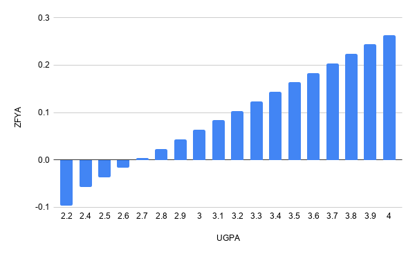
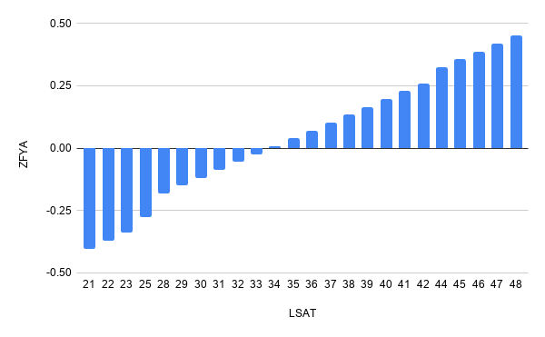
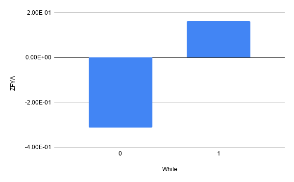
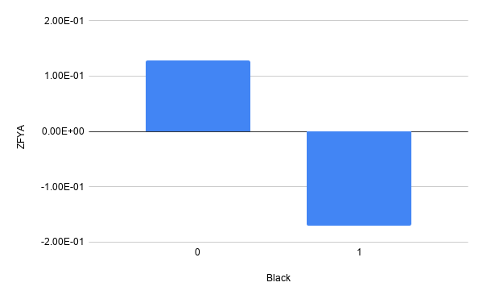
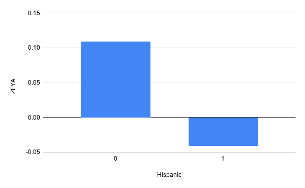
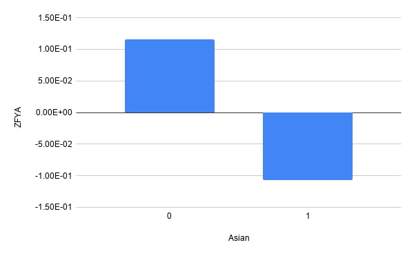
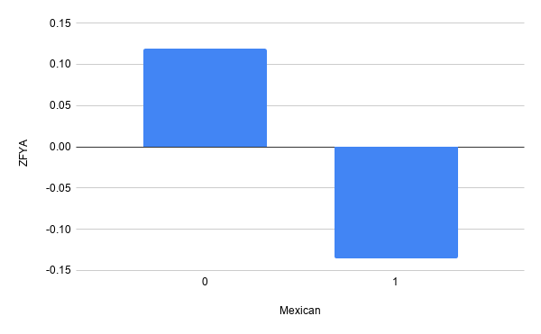
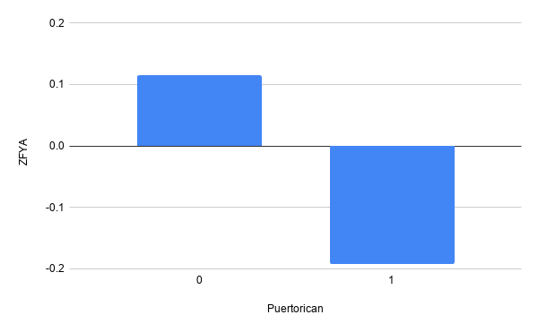

Model fairness with partial dependence plots
A quick guide on how to leverage partial dependence plots to visualize whether an ML model is fair with respect to different groups of people.
As machine learning models, and decision services in general, are used more and more as aiding tools in making decisions that impact human lives, a common concern that is often raised relates to model fairness. A “good” model is expected to treat different groups of people the same way; this means that the prediction generated by a model on a given input (e.g. grant a loan to a person) would rather not be influenced by sensitive features like race, gender, religion, etc.
On the other hand several studies have witnessed that this is often not the case. A very well known example of such an unfair model is the one used by COMPAS, an system often used in the U.S. to determine how likely a given person is to be a repetead offender. A study on the COMPAS system revelead a highly discriminative behavior, in fact black people were wrongly reported to be much more likely to commit a crime again with respect to defendants who were white.
In this post we use Partial Dependence Plots to visualize potential fairness concerns in a machine learning model. A partial dependence plot (or PDP) shows the marginal impact of one (or more) features on the predicted outcome of the model at hand. PDPs can show whether the relationship between the target and a given feature is linear, monotonic or more complex.
We leverage some of the nice work from Rui Vieira to analyze Counterfactual Fairness.
We use the “law school” dataset which contains information on 21,790 law students. For each student it contains the following data: exam scores (LSAT), grade-point average (GPA) collected prior to law school, their first year average grade (FYA). We train a model to predict if an applicant will have a high first year average grade (FYA). At the same time we want to check whether our trained model is fair with respect to students’ race and gender.
As in Rui’s post, we train a scikit-learn linear regression model to predict FYA. In this example we use all the available features on purpose, as we expect the model to show an unfair behaviour.
Let’s first process the dataset.
import pandas as pd
df = pd.read_csv("law_data.csv", index_col=0)
df = pd.get_dummies(df, columns=["race"], prefix="", prefix_sep="")
df["male"] = df["sex"].map(lambda x: 1 if x == 2 else 0)
df["female"] = df["sex"].map(lambda x: 1 if x == 1 else 0)
df = df.drop(axis=1, columns=["sex"])
df["LSAT"] = df["LSAT"].astype(int)
Let’s define the non numerical feature names.
A = [
"Amerindian",
"Asian",
"Black",
"Hispanic",
"Mexican",
"Other",
"Puertorican",
"White",
"male",
"female",
]
We are now ready to train a linear regressor to fit the dataset.
from sklearn.model_selection import train_test_split
from sklearn.linear_model import LinearRegression
import numpy as np
df_train, df_test = train_test_split(df, random_state=23, test_size=0.2);
linreg_unfair = LinearRegression()
X = np.hstack(
(
df_train[A],
np.array(df_train["UGPA"]).reshape(-1, 1),
np.array(df_train["LSAT"]).reshape(-1, 1),
)
)
y = df_train["ZFYA"]
linreg_unfair = linreg_unfair.fit(X, y)
At this point we persist the existing sklearn module as a PMML model onto disk. This will allow us to use the TrustyAI explainability library to generate Partial Dependence Plots for all the involved features.
from sklearn2pmml.pipeline import PMMLPipeline
from sklearn2pmml import sklearn2pmml
pipeline = PMMLPipeline([
("regressor", linreg_unfair)
])
pipeline.fit(X, y)
sklearn2pmml(pipeline, "sample.pmml", with_repr = True)
Once the model has been saved to disk. We further create a pandas dataframe for the training data and persist inputs and target separately to disk as CSVs.
altered_train = pd.DataFrame(X)
y_df = pd.DataFrame(y)
altered_train.columns = A + ["UGPA", "LSAT"]
altered_train.to_csv('inputs.csv')
y_df.to_csv('target.csv')
At this point we can use TrustyAI library to generate PDPs for the PMML model.
To do this we switch to Java, load the PMML model using Kogito kie-pmml-api and wrap it as a generic PredictionProvider using TrustyAI explainability-core library (from kogito-apps).
PMMLRuntime pmmlRuntime = getPMMLRuntime(new File("sample.pmml"));
PredictionProvider model = inputs -> CompletableFuture.supplyAsync(() -> {
List<PredictionOutput> outputs = new ArrayList<>();
for (PredictionInput input : inputs) {
Map<String, Object> map = new HashMap<>();
int i = 1;
for (Feature f : input.getFeatures()) {
map.put("x" + i, f.getValue().asNumber());
i++;
}
final PMMLRequestData pmmlRequestData = getPMMLRequestData("sampleRegressionModel0", map);
final PMMLContext pmmlContext = new PMMLContextImpl(pmmlRequestData);
PMML4Result pmml4Result = pmmlRuntime.evaluate("sampleRegressionModel0", pmmlContext);
Map<String, Object> resultVariables = pmml4Result.getResultVariables();
String zfya = "" + resultVariables.get("ZFYA");
PredictionOutput predictionOutput = new PredictionOutput(List.of(
new Output("ZFYA", Type.NUMBER, new Value(zfya), 1d)));
outputs.add(predictionOutput);
}
return outputs;
});
Let’s load the training data to obtain the data distribution we can use to generate partial dependence plots.
List<Type> schema = new ArrayList<>();
schema.add(Type.NUMBER);
schema.add(Type.NUMBER);
schema.add(Type.NUMBER);
schema.add(Type.NUMBER);
schema.add(Type.NUMBER);
schema.add(Type.NUMBER);
schema.add(Type.NUMBER);
schema.add(Type.NUMBER);
schema.add(Type.NUMBER);
schema.add(Type.NUMBER);
schema.add(Type.NUMBER);
schema.add(Type.NUMBER);
DataDistribution dataDistribution = DataUtils.readCSV(Paths.get("inputs.csv"), schema);
We can now instantiate a PartialDependenceExplainer (from explainability-core), that we’ll use to generate PDPs.
PartialDependencePlotExplainer explainer = new PartialDependencePlotExplainer();
PredictionProviderMetadata metadata = new PredictionProviderMetadata() {
@Override
public DataDistribution getDataDistribution() {
return dataDistribution;
}
...
@Override
public PredictionOutput getOutputShape() {
return new PredictionOutput(List.of(new Output("ZFYA", Type.NUMBER)));
}
};
We can generate partial dependence plots for all the input features.
List<PartialDependenceGraph> partialDependenceGraphs = explainer.explainFromMetadata(model, metadata);
for (PartialDependenceGraph pdg : partialDependenceGraphs) {
DataUtils.toCSV(pdg, Paths.get(pdg.getFeature().getName() + "_" + pdg.getOutput().getName() + ".csv"));
}
We know that UGPA (grade point average) and LSAT (entrance exam scores) features are likely to have a monotonicly increasingly impact on the expected average grade for a student’s first year (ZFYA). Let’s analyse the resulting PDP for such features:


The impact on the average grade is, as expected, growing both when LSAT and UGPA grow, in a linear fashion.
Let’s now look at the more sensitive features that indicate race, unfortunately the model seems biased towards predicting higher grades for white people with respect to black people.


If we look closer at other ethnicities we see the model seems unfair towards all of them. In summary it seems this model is positively biased towards white people and negatively biased towards anyone else.




Partial depdendence plots provide a very intuitive look into how the model treats a certain feature in isolation with respect to any other feature; this makes them particularly useful to look into potential fairness concerns.
References
Greedy function approximation: A gradient boosting machine
The Fairness of Credit Scoring Models